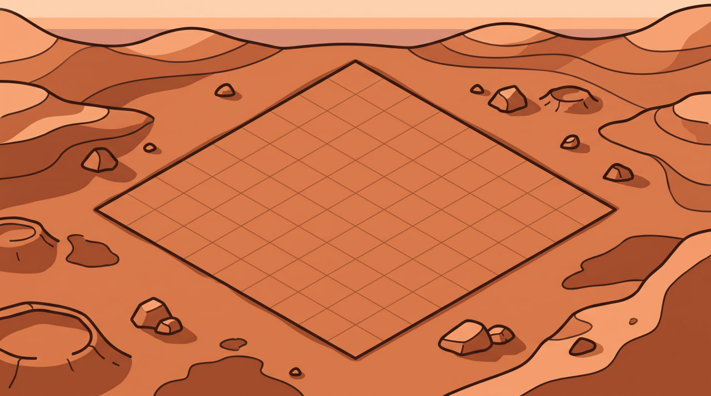
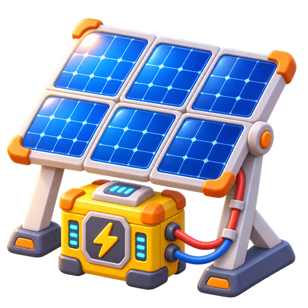
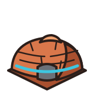
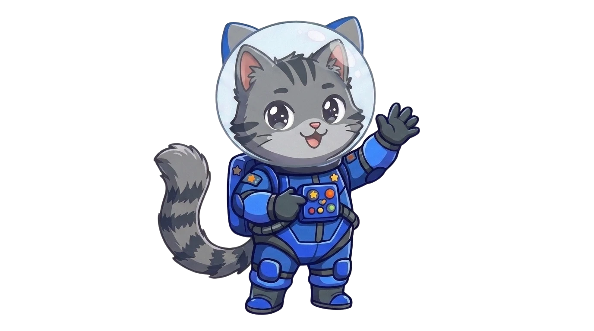

Welcome to Mars: Sols of Survival! For this challenge we did not just build a resource game – we built a survival adventure where the storms are real. A Sol is one day on Mars. Every Sol, the player's base is hit by an event that really happened: the giant sunspot of October 2014, the X8.2 solar flare of September 2017 that doubled radiation on the Martian surface, the planet-wide dust storm that ended NASA's Opportunity rover in 2018, and the strongest particle storm ever measured on Mars, on 20 May 2024.
The player is not alone. They pick one of four Space Kittens – Nova the botanist, Cosmo the scientist, Rocket the engineer or Luna the medic – who becomes their partner, explains each choice in plain words and never says "Game Over". Together they pack a rocket with only 7 crates, build a base, and then survive five Sols by doing hands-on missions: rubbing dust off solar panels, melting ice for water, stacking regolith bricks against radiation, and watching the Sun to forecast the next storm.
Three bars must stay above zero: ⚡ Power, 💨 Life Support (air, water, food) and ❤️ Crew Health. Every choice helps one bar and costs another – exactly the trade-off real mission planners face.
Phase 1 – Create Your Base. Real rockets can't carry everything: the player picks 7 crates from 11 (5 station types). A live "daily balance" strip shows the cost of every choice before launch – for example a Power Station gives ⚡ +7 per Sol in full sunlight, while a Greenhouse gives 💨 +3 but uses ⚡ 2. The kitten warns ("No Shield? The crew will have nowhere to hide from storms") but never blocks.
Phase 2 – The Sol loop (five beats every Sol):
| Goes in | What the game does | Comes out |
|---|---|---|
| The real event for this Sol (date, flare class, danger level, warning time, Earth–Mars light delay) + the player's base and choices | Storm dose = base dose for the danger level × (1 − 25% per Shield level), × 0.15 if sheltering or × 0.6 if reinforcing. Then the overnight upkeep (⚡ −12, 💨 −10, ❤️ −1 on Mars, −2 on the Moon) and every station's daily effect, scaled by sunlight (clear 1.0, dust storm 0.2, lunar night 0). | New bar values, a "Because…" sentence, the real NASA measurement, Earth's (late) reply, Credits earned, and the history used for the debrief chart. |
Each Sol is one real event from NASA records. The table under each card shows the exact values the game uses. All dates and measurements below were checked against the cited sources.
A quiet day to learn the controls. Even on calm days Mars is not safe: the thin atmosphere lets cosmic rays through.
Sunspot region AR 2192, the largest of the solar cycle, fires an X3.1 flare. It looks terrifying – but it launched no Earth-directed cloud of particles. The lesson: forecasting is hard. A kid who hides loses a day of work for nothing; a kid who did the "Watch the Sun" mission knows the storm won't follow.
An X8.2 flare from sunspot AR 2673 sends a particle storm across the solar system. Within hours, particles reach the surface of Mars. This is the first real danger, and the first time the player learns that Earth is too far away to help.
A dust storm grows until it covers the whole planet. Sunlight drops so low that solar panels barely work – the same reason NASA's Opportunity rover went silent. The lesson moves from radiation to energy: save power, or keep the greenhouse running and risk the battery.
The final test. An estimated X12 flare on the far side of the Sun sends the biggest radiation surge Curiosity has ever recorded. Everything the player built – shields, shelter, stored power – is tested at once.
The Moon site uses its own real events: the lunar night (about 14 Earth days without sunlight, shortened to one Day in the game), the 10 September 2017 storm, and the August 1972 storm that hit between Apollo 16 and Apollo 17 – NASA estimated that a moonwalker caught outside could have absorbed about 400 rem, which is why Artemis plans storm shelters. On the Moon, Earth is only 1.3 light-seconds away, so Ask Earth always arrives in time – a clear contrast with Mars. (Source: National Academies, Storms from the Sun; Chang'e-4 lunar dose: Zhang et al. 2020, Science Advances, doi:10.1126/sciadv.aaz1334.)
This mode asks NASA's DONKI database, through api.nasa.gov, for the last 7 days of solar particle events (SEP), coronal mass ejection analyses and solar flares. It turns what it finds into 3 Sols: a CME's real speed sets the danger and travel time, a flare's class sets its strength. Calm weeks are shown honestly as "Calm Sun this week!". If NASA can't be reached within 4 seconds, the badge changes from LIVE to OFFLINE and the game uses archive events instead – static data is never labelled live.
Every mission costs 1 action, shows its gain and cost before you play, and cannot be failed: "Great!" gives the full effect, "Good!" gives 75%. Each ends with a result card and a "Real Science" fact with its source.
| Station | Mission (how you play) | Effect | Real science behind it |
|---|---|---|---|
| Power | Dust Off the Panels – rub the dust off (Moon: turn a dial to face the low Sun) | ⚡ +10 (+16 on a dusty Sol) · ❤️ −2 | InSight's mission ended in 2022 as dust covered its panels; NASA tests tall vertical arrays (VSAT) for the lunar pole. |
| Charge the Battery – drag each wire to the same-colour socket | ⚡ +12 · 💨 −4 | Curiosity and Perseverance use nuclear power because Mars sunlight is weak and dusty. | |
| Greenhouse | Plant & Water – drag seeds into trays, hold the moisture in the green zone | Big harvest tomorrow · ❤️ +1 · 💨 −3 | Martian soil holds perchlorate salts, so space farms use hydroponics; ISS crews first ate space-grown lettuce in Aug 2015 (Veggie). |
| Harvest – drag only the ripe food into the crate | 💨 +8 (big: +16) · ❤️ +2/+3 · ⚡ −3 | Plants clean the air and fresh food helps crew morale. | |
| Water | Melt the Ice – drag ice into the heater, keep the temperature green | 💨 +12 · ⚡ −8 | Phoenix dug up ice in 2008; LCROSS found ice in the Moon's Cabeus crater in 2009; melting 1 kg takes ~334,000 J. |
| Recycle the Water – stack gravel, charcoal and membrane in the right order | 💨 +6 · ❤️ +2 · ⚡ −3 | The ISS recycles about 98% of its water (2023). | |
| Radiation Shield | Stack Regolith Bricks – drag a brick onto each weak spot | 🛡️ +1 (stays) · ❤️ −2 · ⚡ −4 | NASA's 3D-Printed Habitat Challenge: build with local soil. |
| Fill the Water Wall – fill the tanks to the green band | 🛡️ +1 tonight · 💨 −6 | Hydrogen-rich water stops particles; Artemis crews would shelter behind supply bags in Orion. | |
| Research Lab | Scan Rock Samples – match each rock's glow to a pattern | 40 Credits · ice found → next melt +50% | Perseverance's SHERLOC and PIXL read rocks by their light. |
| Watch the Sun – turn two dials to match the Sun's wave | 40 Credits · full forecast | NASA's Moon to Mars Space Weather Analysis Office and the DONKI database. |




These are the NASA resources the game actually uses.
| Resource | Link | How we used it |
|---|---|---|
| DONKI – Space Weather Database Of Notifications, Knowledge, Information (NASA GSFC / CCMC) | kauai.ccmc.gsfc.nasa.gov/DONKI | (1) Archive: dates, flare classes and event types of the Quick Mission events, shown with an ARCHIVE badge and citation. (2) Live: the Today's Space Weather mode calls DONKI SEP, CMEAnalysis and FLR for the last 7 days and builds 3 Sols from them (CME speed → danger and travel time; flare class → strength). |
| NASA Open APIs | api.nasa.gov | Gateway for the live DONKI calls (public DEMO_KEY, answers cached in the browser for one day). Also APOD (Astronomy Picture of the Day) shown on the title screen as "Today's real space picture" with its credit, and Mars Rover Photos for a real Curiosity photo on Mars reveal cards when the service answers. |
| Curiosity RAD (Radiation Assessment Detector), Mars Science Laboratory | swri.org/node/9079; doi:10.1126/science.1244797 | Mars background dose (~0.67 mSv/day) → Crew Health upkeep; Sol 1 "real number". |
| NASA JPL – 20 May 2024 storm | jpl.nasa.gov/news/…epic-solar-storm | Sol 5 event: 8,100 micrograys, X12 flare, largest surge since 2012. |
| SwRI / NASA – 10 Sept 2017 storm | swri.org press release; NASA SVS 12706 | Sol 3 event: X8.2 flare, surface radiation more than doubled. |
| NASA – Opportunity mission end | nasa.gov news release | Sol 4 event: 2018 global dust storm, last contact 10 June 2018. |
| NASA HelioWiki – Oct 2014 flare | heliowiki.smce.nasa.gov | Sol 2 event: X3.1 flare from AR 2192 without an Earth-directed CME. |
| NASA Moon and Mars facts; Artemis | science.nasa.gov/moon; science.nasa.gov/mars | Lunar night length; Mars receives ~43% of Earth's sunlight (crate info cards); storm shelters. |
| NASA mission facts used in "Real Science" cards | InSight, Phoenix, Perseverance, Veggie | One fact and source per mission (see table 2.5): dusty panels, ice, hydroponics, rock analysis, ISS water recycling, 3D-printed habitats. |
Data preparation: we read each event's date and class from DONKI and NASA/JPL news, set a danger level (1–5) and warning time, estimated the one-way Earth–Mars light time for that date, and stored each event with its citation and a "verified" flag in data/events.js. Live DONKI data is converted in the browser at play time.
| Resource | Link | How we used it |
|---|---|---|
| Chang'e-4 Lunar Lander Neutrons and Dosimetry (CNSA) – Zhang et al. 2020, Science Advances | doi:10.1126/sciadv.aaz1334 | Moon surface dose (~1,369 µSv/day), used for the Moon's higher health upkeep. |
| Canadian Space Agency – youth and educator resources, Food Production in Space | asc-csa.gc.ca/eng/youth-educators | Seed choices and crop background for the Greenhouse; "For grown-ups" link in Family mode. Credited to CSA, not NASA. |
| National Academies – Storms from the Sun (2002) | nationalacademies.org | August 1972 storm facts for the Moon site. |
| Google Fonts – Baloo 2 and Lilita One (SIL Open Font License) | fonts.google.com | Game fonts. |
| Higgsfield (GPT Image 2.6) | higgsfield.ai | Generated 5 images: Mars build plot, Power Station, rover, Mars and Moon pictures. |
| Emoji | System emoji fonts | Icons on bars, buttons and mini-game props. |
| GitHub and GitHub Pages | github.com | Code repository and free hosting. |
Yes, we used AI/SI tools. The idea for the game – the kittens, the real-event Sols, the stations and missions and the trade-offs – came from our team; SI tools helped us build it faster.
| Tool | Task | Affected work |
|---|---|---|
| Claude (Anthropic), a large language model | Wrote and debugged most of the game code from our design; drew the SVG art in code; synthesised the music in code; wrote the automated play-test; helped format our design document and this PDF; helped check facts against sources. | js/game.js, css/style.css, index.html, data/events-infinite.js, tests/playtest.js, assets/*.svg. Acknowledged in the code comments and commit messages ("Co-Authored-By: Claude"). |
| Higgsfield (GPT Image 2.6), image generator | Generated 5 game images from our written style prompt. | assets/plot-mars.jpg, station-power.png, rover.png, site-mars.png, site-moon.png. Marked "SI-GENERATED IMAGE" in this PDF. |
| AI image tool used by the team | Generated the four Space Kitten characters and the Moon plot reference image. | assets/kitten-*.webp, assets/plot-moon.webp. Marked "SI-GENERATED IMAGE" in this PDF. |
No SI-generated content uses or changes NASA logos, flags or mission identifiers. The game's Data Sources screen also states that the code was written with help from Claude and the art was made with AI image tools.